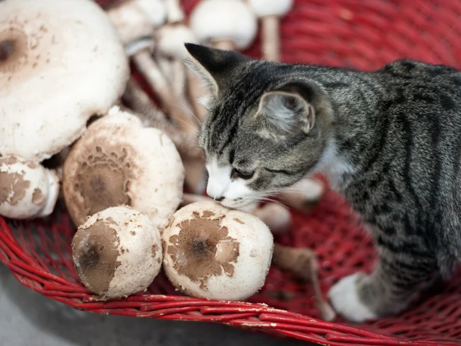

Did you know?

- Some cats enjoy cooked mushrooms, surprising their meat-based dietary expectations.
- Mushrooms contain glutamate, which gives the umami (savory) flavor cats can detect.
- Cats lack sweet taste receptors but have strong receptors for umami, linked to protein.
- Their interest in mushrooms is likely due to the protein-like taste, not the fungi itself.
- Humans are omnivores with a wider range of taste receptors, including for sweetness.
- Despite interest, mushrooms can be toxic to pets; vets advise against feeding them to cats or dogs.
- The story started with Ellen Jacobson, shared in a mycology newsletter, and caught the attention of scientists.
- An article from "Mystery Solved": Why The Cat Craves Mushrooms (And People Do, Too)